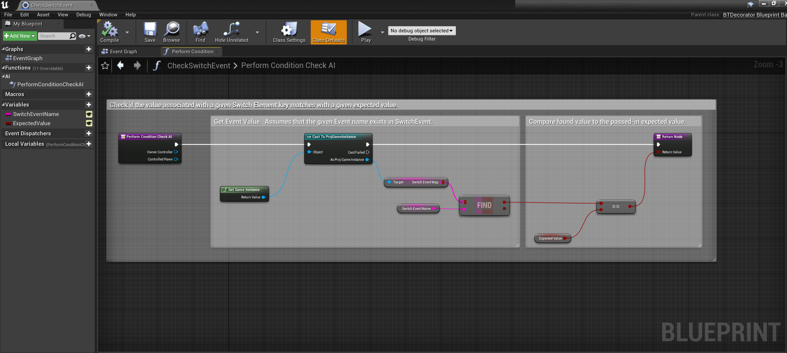
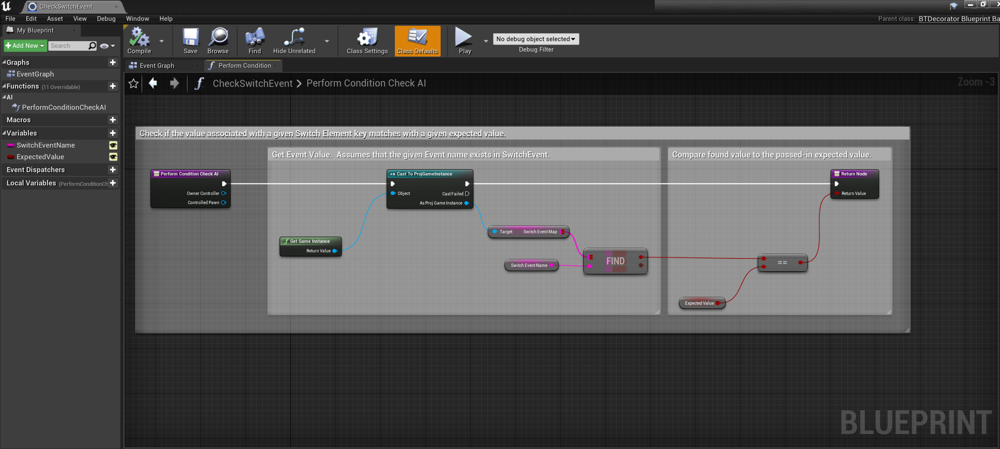

Mark: Uprising
Engine: Unreal
Role: Developer, Lead Programmer
Mark: Uprising is a mystery game developed using the Unreal Engine and it’s Blueprint Visual Scripting in a team of five for my Game Development I course. In Mark: Uprising, the player plays as the detective Phoebe T. Ruth as she uncovers Dr. Gene E. Usse’s killer and mysterious research by collecting evidence and interrogating the other characters.
DEMO
My main focus when developing Mark: Uprising was the dialogue system: initiating the dialogue with an NPC or object, displaying and hiding text, advancing the dialogue, presenting dialogue options, and implementing various effects like changing the screen’s color, fading effects, and playing music and sound effects. I also implemented all of the dialogue into the game. The demo contains some interactions from Part 2 of Mark: Uprising.
CHALLENGES & SOLUTIONS
As this was my first time working with Unreal, the biggest challenge when working on Mark: Uprising was learning Unreal, it’s Blueprint Visual Scripting, and Unreal’s Behavior Trees, which were used for the dialogue trees.As I worked on the dialogue system, I needed a way to store the data for the items in the inventory such as their name, description, and icon image. I created a structure outlining the properties of an item and a data table to store the items.
When implementing the dialogue, I needed a way to record that an item was added into the player’s inventory or that an event had occurred, both of which needed to be accessible across multiple objects and levels. To store this information, I created a custom Game Instance that had dedicated maps for event triggers and the inventory, the latter of which was populated by the keys in the inventory data table. To set the value of an event or the inventory, I then created tasks to set the value of a given key in these maps. To check if an event has occurred or if an item was added into the inventory, I also created a decorators that checks if the value in a given key in one of these maps matches a given value.
From “Hostile_Enemy.gd”


From “Hostile_Enemy.gd”